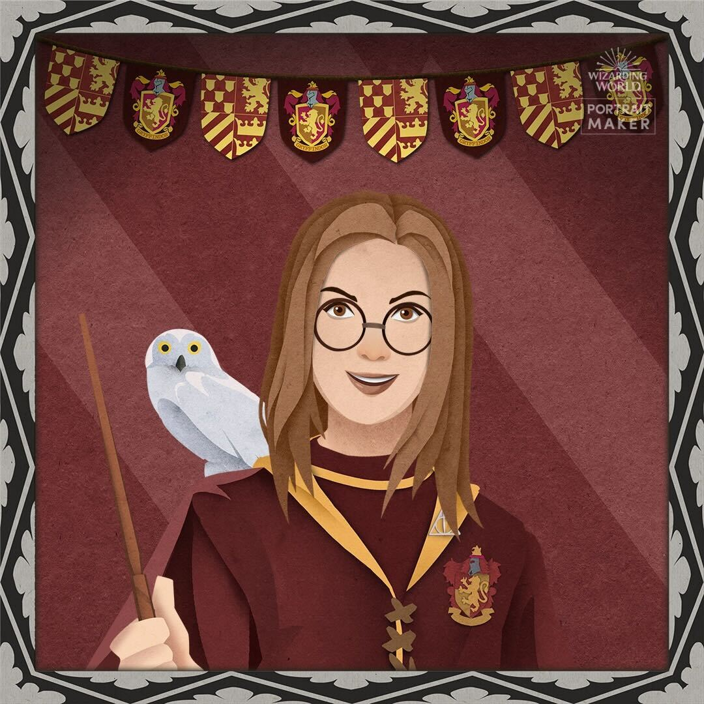

Cris
Mi nombre es Cris y vivo en Madrid. Antigua Store Manager, actual Adalaber y futura programadora. A mis 33 años me sigue encantando aprender y he descubierto en la programación un mundo de posibilidades para crear cosas nuevas y que además, ¡funcionen! No es fácil aprender algo nuevo pero a veces sólo hay que salir fuera, despejar la cabeza, recordar quién eres y dónde quieres estar.